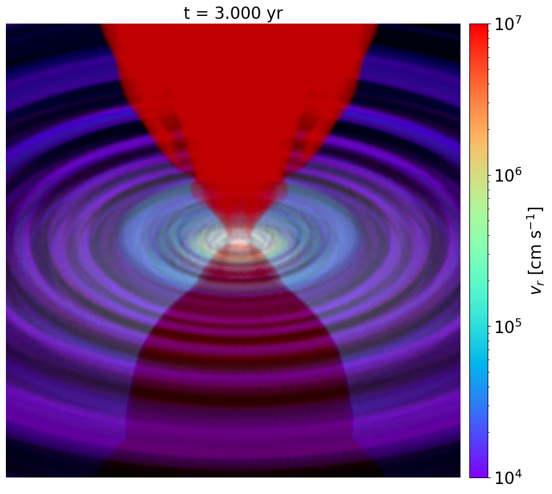
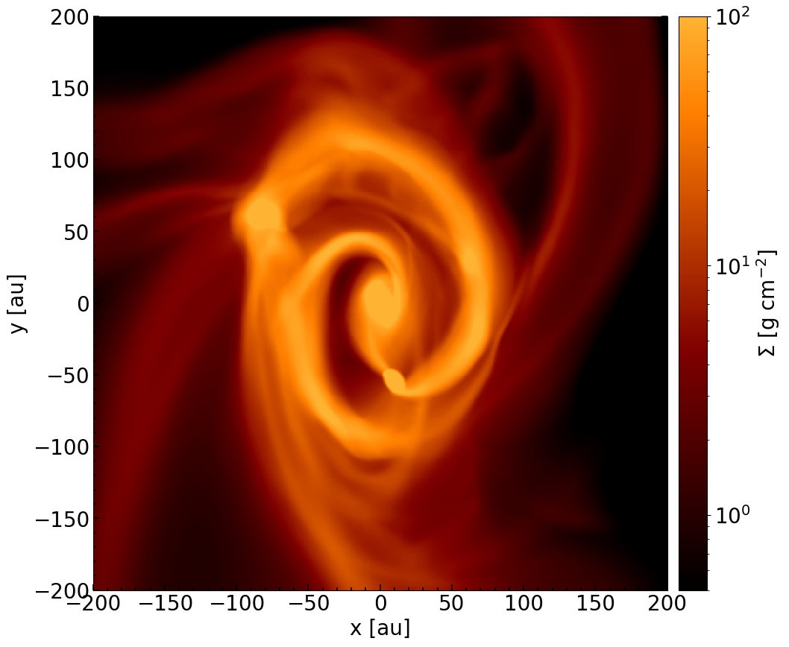
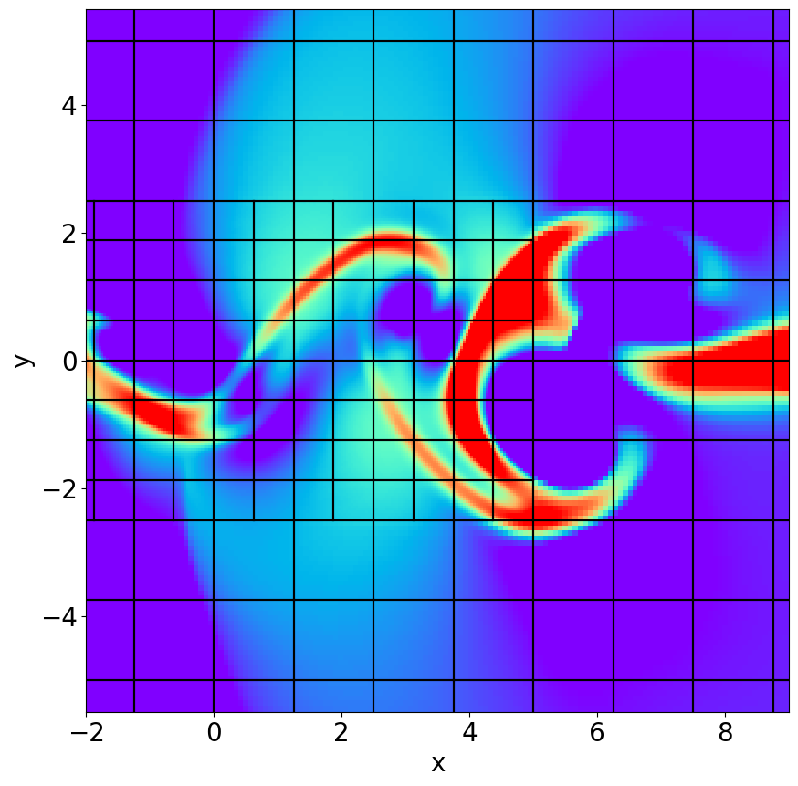
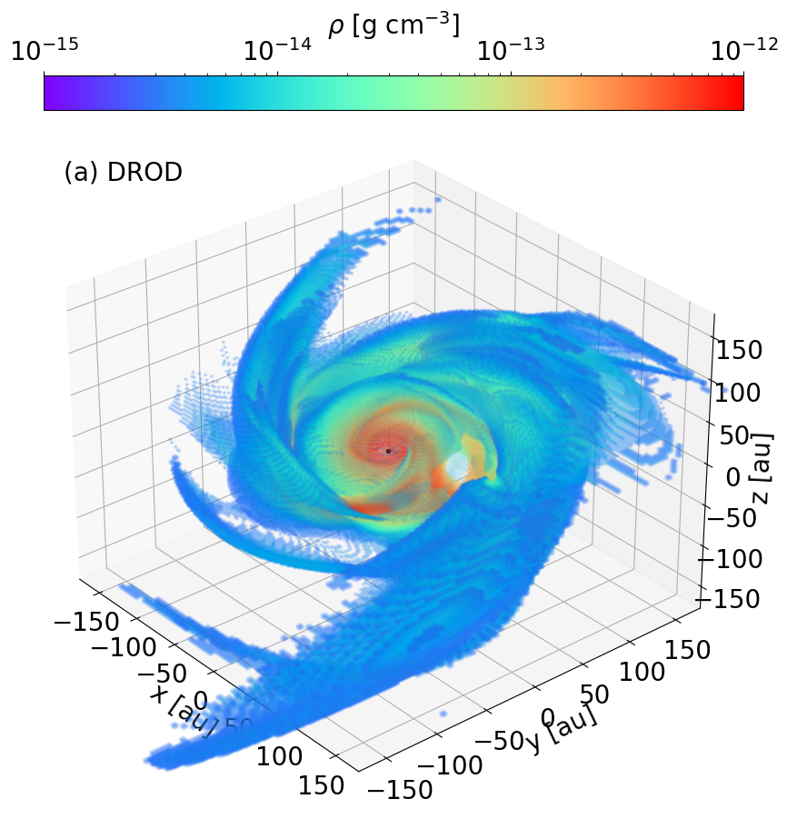
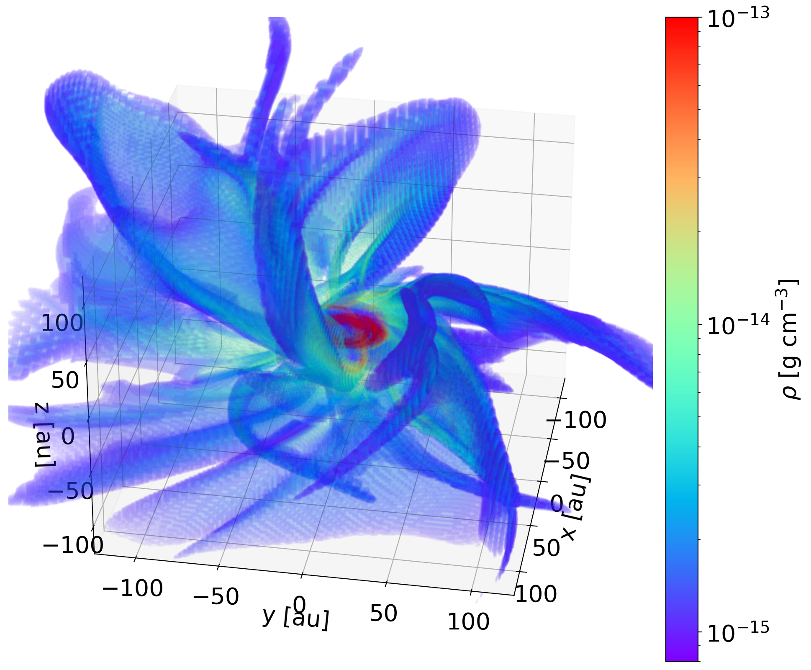
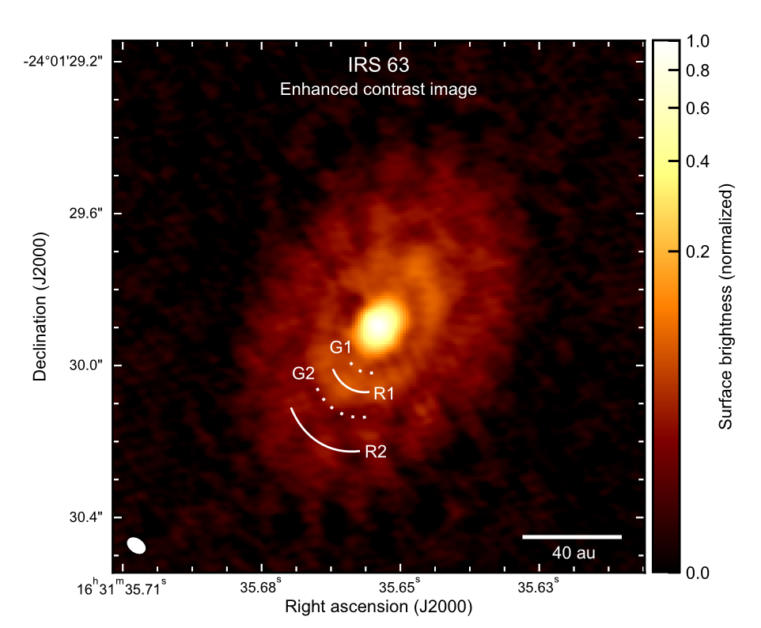
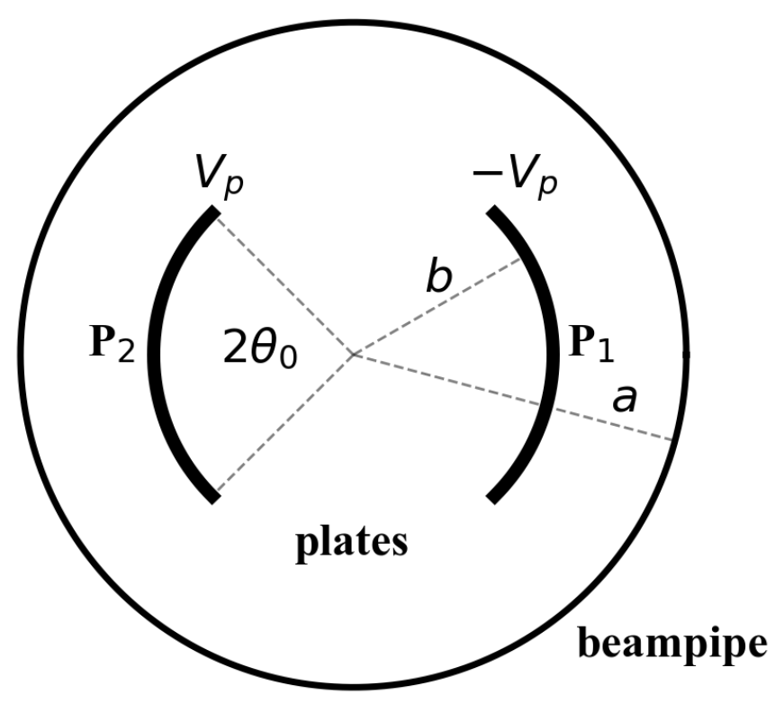
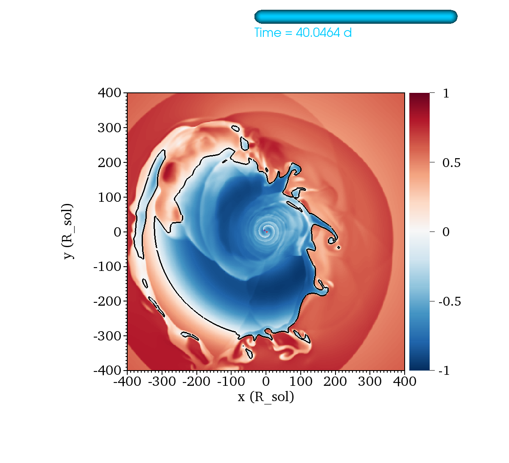

magneto-hydrodynamics simulations, protostellar disks, protoplanetary disks,
dust grain dynamics and grain growth, code development
Research interests
Current projects
Jet launching in protoplanetary disks
Jets are always observed accompaning young stellar objects (YSOs), yet their formation is still an area of active debate. Unlike in the Active Galactic Nuclei (AGNs) environment, where the jet can be powered by the black hole itself, the YSOs don't have such luxury and must rely on the release of gravitational energy to launch the jet, typically believed through magnetic fields threading the disk.
In this project, we aim to illucidate how jets are launched from YSOs. Currently we are preparing a first publication of the "avalanche accretion stream-driven jet launching model", proposed based on our 2D (axis-symmetric) non-ideal MHD simulation that includes an inner "disk active zone" (where thermal ionization dominates and the disk is in the ideal MHD limit) and an outer "disk dead zone" (where ionization fraction low and ohmic dissipate removes magnetic field efficiently).
The simulations are expected to be extended to 3D to relax the assumption of axis-symmetry, and to include effects achievable only in 3D such as azimutual asymmetric, azimuthal magnetic reconnection, and 3D instablities.

a 3D visualization of the current 2D jet simulation, showcasing the jet formed in our simulation
Synthetic observations of protostellar envelope
Our earlier research into the structure of protostellar envelopes suggests a two-layer model for single star formation, consisting of outer sheetlets and an inner star-disk system, and a three-layer model is proposed for multiple star formation, featuring outer sheetlets, a middle layer of DROD, and an innermost region with stars and circumstellar disks (for further details, see the single and multiple formation projects below). We are now using this star-forming simulation data to bridge theoretical models with observational data and are working on methods to determine magnetic field strengths from observable quantities.

Column density in one of our multiple-forming simulations, showing remarkable resemblence to the L1448 protostellar system
Past and current projects
Bootes & Arcturus code development
Computing technologies are upgraded at an astonishing rate each year, but the most recent resources are not often underutilized in High Performance Computing (HPC) for astronomical simulations due to a lack of compatible code. . This code development project aims to address this gap by leveraging the latest computational technologies to accelerate astronomical simulations.
The Bootes simulation code is a fluid simulation code I developed in May, 2022 at the University of Virginia (where I (will) get my Ph.D.). It is named after the Zenith constellation at the time of its birth time (which also tells something about my schedule as an astronomer.). The latest public version of Bootes is compatible to run on both GPU (by OpenACC) and CPU (OpenMP). Currently, I'm adding MPI capibilities and modules for additional physics.
The Arcturus simualtion code is a Lagrangian particle-based tool designed for post-processing hydrodynamics simulations to trace the trajectories of particles or dust. Developed as a lightweight package for ease of use and rapid deployment, Arcturus leverages known hydrodynamics data to evolve particles with adaptive time-stepping, enhancing the code's efficiency.
If you are interested in the codes, please send me an email. I'm happy to share the latest version of the codes.

A simulation of the Kelvin-Helmholtz Instabilities, showcasing the mesh-refinement capibility of the Bootes code
Multiple protostar formation
Most stars are found in multiple systems, yet the formation of close (<100 au) multiple stellar systems, particularly those with misaligned protostellar disks, remains poorly understood. In this project, we extend our single star formation simulations to explore multiple star formations and propose a new formation mechanism: the "DROD Fragmentation Mechanism," which could account for these close, misaligned systems.
The simulation setup builds on the single formation case (see details below) but incorporates higher initial mass and angular momentum. In multiple star formation scenarios, the gravito-magneto-sheetlets (described in the single formation case) feed into a Dense Rotation-Dominated Structure (DROD) rather than a protostellar disk. The DROD, supported against collapse through rotation, is highly dynamic and can exhibit irregular shapes. Due to its dynamic nature, when the DROD fragments into multiple stellar objects, the circumstellar disks around each star can become misaligned. The fragmentation of a DROD depends on its level of magnetization, which is influenced by the strength of non-ideal MHD effects (such as ambipolar diffusion) included in the simulation.
Make sure to check out the movie of the multiple star formation!
The DROD fragmentation mechanism is described in detail in Tu et al. 2024b

3D rendering of the DROD. I encourage you to watch the movie for visualization of multiple formation through the DROD-fragmentaion mechanism
Single protostar and protostellar disk formation
There is little doubt about the importance of magnetic fields in star formation. However, if the magnetic field is perfectly coupled with the gas (in the ideal MHD limit), the field strength in protostellar disks could become so intense that it might lead to the disk's destruction, a scenario known as the "magnetic braking catastrophe." Non-ideal MHD effects are necessary to alleviate this issue by allowing magnetic fields to be removed from the protostellar disk during the collapse phase, but the extent to which the field can be retained in the disk remains uncertain. Additionally, high-resolution observations are required to accurately resolve the structures within the inner protostellar envelope. This project aims to explore how to mitigate the magnetic braking catastrophe and to elucidate the structure of the protostellar envelope.
We used Athena++ to simulate the collapse of an initially turbulent pseudo-Bonner-Ebert sphere from the collapse phase to the formation of a protostar and a protostellar disk. The simulation includes the dominant non-ideal MHD effect, ambipolar diffusion (AD). Our findings indicate that with strong AD, the magnetic field is effectively removed, allowing the formation of a large (~200 au) disk. Conversely, with weak AD, magnetic braking efficiently removes angular momentum, preventing disk formation. The protostellar envelope is characterized by "gravo-magneto-sheetlets," a disrupted and warped pseudodisk. These sheetlets are responsible for transporting mass and magnetic flux within the protostellar envelope and primarily feed the protostar and protostellar disk through the upper and lower surfaces of the disk.
The results are published in Tu et al. 2024a

3D structure of the gravo-magneto-sheetlets
Grain Growth during protostellar disk formation
Planet formation from micron-sized dust can be divided into three stages: grain growth (from micro-sized to mm/cm-sized), streaming instablity (up to 100 km-sized), and pebble accretion (> 100 km).
Observations of early planet formation and large (mm/cm-sized) dust grains in protostellar disks suggests early grain growth in protostellar environement. How do the grains grow to these large sizes?
To answer this question, we used Athena++ to conduct radiation-hydrodynamics simulation of protostellar disk formation. I developed a dust simulation code that post-processes Athena++ output and simulation dust advection and grain growth. We found grain growth slow in laminar protostellar disks, and a factor of 4 increase in grain growth rate is needed to produce the mm/cm-sized grains. An analytic solution of the Smolochowski coagulation equation is used to validate the simulation results, and the analytic solution provides an easy way to estimate grain growth time scale.
The results are published in Tu et al. 2022

Rings and gaps in young (<500,000 yr old) disk system IRS 63, indictive of early grain growth. Image adopted from Segura-Cox D. M., et al., 2020,
My undergraduate research at the University of Rochester
Theory and conceptual design of kickers for echo generation in IOTA
- Advisor: Tanaji Sen & Jean-Francois Ostiguy, Fermi National Accelerator Laboratory, Naperville, IL, Summer 2019 (Lee Teng Internship)
- Project: Conceptual design of dipole and quadrupole stripline kickers used in steering the particle beam as it goes around the accelerator. The project mainly focus on the electric and magnetic field properties of the kickers.
- A poster and a report are written for this project

A dipole kicker, with two curved kicker plates
Simulations of Common Envelope Evolution (CEE)
- Advisor: Adam Frank & Eric G. Blackman, University of Rochester, Rochester NY, Summer 2018 - Spring 2020
- Selection of involved projects
- Energy budget and core envelope motion in a Common Envelope Evolution Simulation.
- Examining the effects of recombination by updating the EOS in used in the Common Envelope Evolution simulation.

A frame in our Common Envelope Evolution simulation, with two stellar cores at the center and the surrounding (disrupted) envelope.